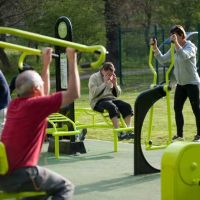

Gimnasia deportiva
Entre los deportes y actividades más destacados que podrás practicar al aire libre, están los siguientes: -Montar en bici: Las principales ciudades de España, ya cuentan con numerosos kilómetros de carriles bicis que rodean la ciudad. Montar en bici es una forma muy divertida y segura de conocer tu ciudad y poder realizar un deporte en espacios habilitados únicamente para las personas que deseen pasear o correr con su bicicleta, sin molestar a nadie o tener que sortear a la gente que se pone en tu camino. ¡Pedalea hasta que no puedas más!